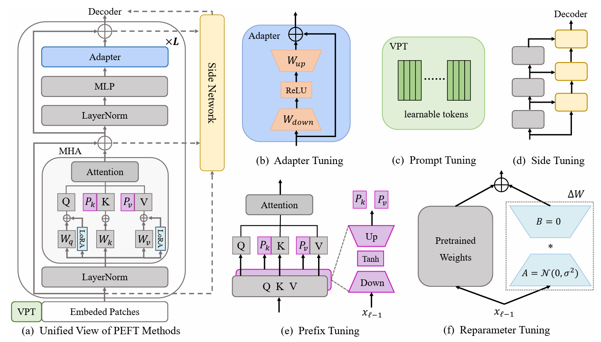

|
I am broadly interested in Computer Vision, including Image/Video Editing/Enhancement/Generation, 3D Generation/Reconstruction and so on.
|
|
|
LayerT2V: Interactive Multi-Object Trajectory Layering for Video Generation
Kangrui Cen,
Baixuan Zhao,
Yi Xin,
Siqi Luo,
Guangtao Zhai,
Xiaohong Liu
arXiv PrePrint
Abstract:
Controlling object motion trajectories in Text-to-Video (T2V) generation is a challenging and
relatively under-explored area, particularly in scenarios involving multiple moving objects. Most community models
and datasets in the T2V domain are designed for single-object motion, limiting the performance of current generative
models in multi-object tasks. Additionally, existing motion control methods in T2V either lack support for multi-object
motion scenes or experience severe performance degradation when object trajectories intersect, primarily due to the
semantic conflicts in colliding regions. To address these limitations, we introduce LayerT2V, the first approach
for generating video by compositing background and foreground objects layer by layer. This layered generation enables
flexible integration of multiple independent elements within a video, positioning each element on a distinct “layer”
and thus facilitating coherent multi-object synthesis while enhancing control over the generation process. Extensive
experiments demonstrate the superiority of LayerT2V in generating complex multi-object scenarios, showcasing 1.4×
and 4.5× improvements in mIoU and AP50 metrics over state-of-the-art (SOTA) methods. The code will be made
publicly available. Project Page: https://kr-panghu.github.io/LayerT2V/
Project Page
/ Code
/ arXiv PrePrint
|
|

|
Parameter-Efficient Fine-Tuning for Pre-Trained Vision Models: A Survey and Benchmark
Yi Xin, Jianjiang Yang, Siqi Luo, Yuntao Du, Qi Qin, Kangrui Cen, Yangfan He, Bin Fu, Xiaokang Yang, Guangtao Zhai, Ming-Hsuan Yang, Xiaohong Liu
Under Review
Abstract:
Pre-trained vision models (PVMs) have demonstrated remarkable adaptability across a wide range of downstream vision tasks,
showcasing exceptional performance. However, as these models scale to billions or even trillions of parameters, conventional full fine-tuning
has become increasingly impractical due to its high computational and storage demands. To address these challenges, parameter-efficient
fine-tuning (PEFT) has emerged as a promising alternative, aiming to achieve performance comparable to full fine-tuning while making minimal
adjustments to the model parameters. This paper presents a comprehensive survey of the latest advancements in the visual PEFT field, systematically
reviewing current methodologies and categorizing them into four primary categories: addition-based, partial-based, unified-based, and multi-task
tuning. In addition, this paper offers an in-depth analysis of widely used visual datasets and real-world applications where PEFT methods have
been successfully applied. Furthermore, this paper introduces the V-PEFT Bench, a unified benchmark designed to standardize the evaluation
of PEFT methods across a diverse set of vision tasks, ensuring consistency and fairness in comparison. Finally, the paper outlines potential
directions for future research to propel advances in the PEFT field. A comprehensive collection of resources is available
at this https URL
Collection of Resources
/ arXiv PrePrint
|

|
Oppo Research Institute
2025.07 ~ Present
Shenzhen, Guangdong, China
Research Intern
Supervisor: Prof. Lei Zhang
|

|
Google DeepMind
|

|
University of California, Merced
|

|
Shanghai Jiao Tong University
2021.09 ~ 2025.06
Shanghai, China
B.S. in Computer Science (Zhiyuan Honors Program, John Hopcroft Class).
|
|
|
Bootstrapping Diffusion Models: Iterative Synthetic Data Generation for Self-Supervised Learning
Kangrui Cen,
Yuxiao Yang,
Shuze Chen,
Ziqi Huang,
Tianyu Zhang
CS3964: Image Processing and Computer Vision, 2023 Fall
Summary:
We introduce a novel bootstrapping approach for training generative models. Specifically, we construct synthetic datasets by combining generated samples from previous iterations with real data. By recycling samples over successive generations, this technique reduces the dependence on large curated datasets while producing varied outputs.
Advisor: Prof. Jianfu Zhang, Code
/ Project Paper
|
|
|
Using information theoretic metrics to study the importance of individual neurons in DNNs
Kangrui Cen
ICE2601: Information Theory, 2023 Spring
Summary:
Using information theoretic metrics for node pruning to learn the importance of individual neurons at different levels in the whole DNN. Entropy, Mutual information and KL-Selectivity are used to determine the order of ablation.
Advisor: Prof. Fan Cheng, Code
/ Project Paper / Slides
|
|
|
GAMES101 RUST (Designed when I was a TA for Programming and Data Structure III)
CS2107: Programming and Data Structure III, 2023 Summer
Summary:
This is the course project I designed on my own for CS2107 where I served as TA, which is basically generated from Graphics And Mixed Environemnt Seminar, Lingqi Yan, UCSB, but chooses to use a more modern programming language, i.e. Rust. The project includes 3 LABs, simply allows students to learn the basics of rasterization in graphics and, most importantly, to have fun.
Advisor: Prof. Qinsheng Ren, Public Template
/ Project Tutorial
|
|
|
Stop Running Your Mouth: Machine Unlearning 4 Pre-Trained LLMs
Kangrui Cen, Tianyu Zhang
CS3966: Natural Language Processing and Large Language Model, 2024 Spring
Summary:
We employ the Machine Unlearning approach to mitigate the retention of unethical data within LLMs and prevent the generation of harmful responses. We carefully design a method to ensure: (1) For a negative Q&A training pair, the LLM forgets its original response to the input; (2) The LLM randomly maps negative prompts to any output distribution within its output space; (3) The LLM maintains a level of general language ability close to its original state post-unlearning.
Advisor: Prof. Rui Wang,
Code
/ Project Paper
/ Simulative Rebuttal
/ Slides
|
|
Outstanding Graduates of Shanghai Jiao Tong University, 2025
|
|
Merit Scholarship, B Level (top 10%), SJTU, 2022, 2023
|
|
Meritorious Winner of MCM/ICM (top 7%), 2022
|
|
Zhiyuan Honors Scholarship (top 5%), SJTU, 2021, 2022, 2023
|
|
{kind=link}